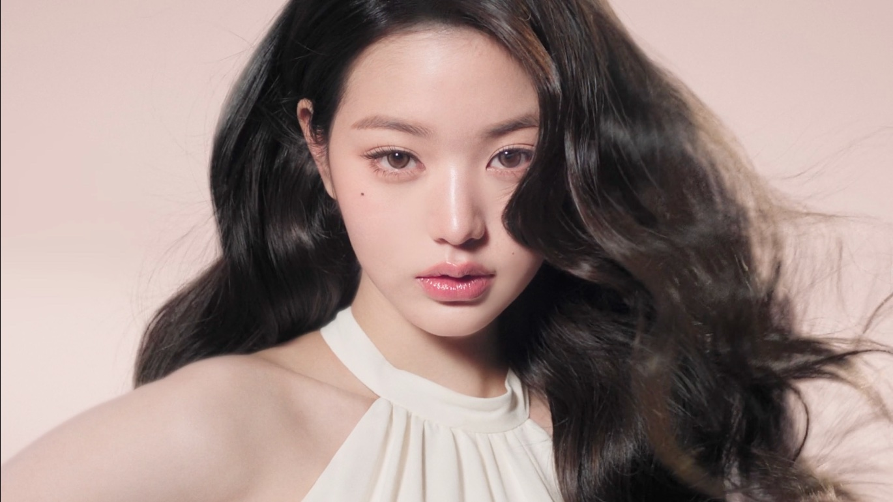
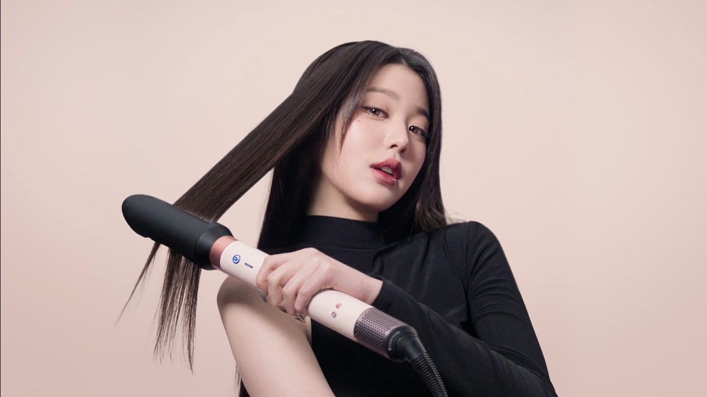
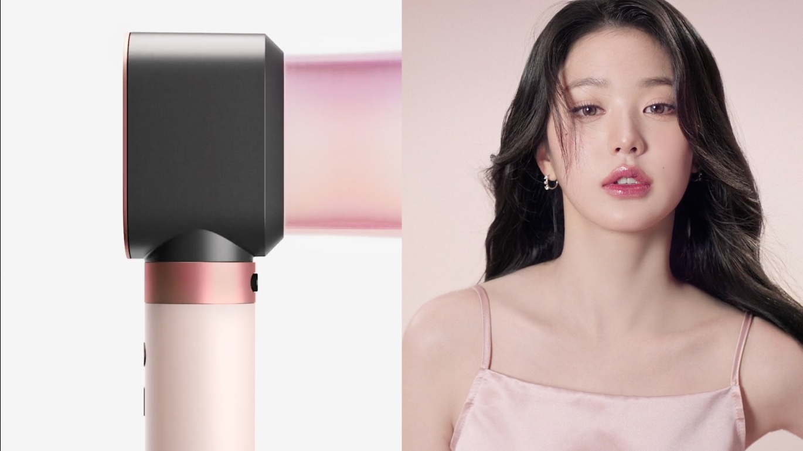
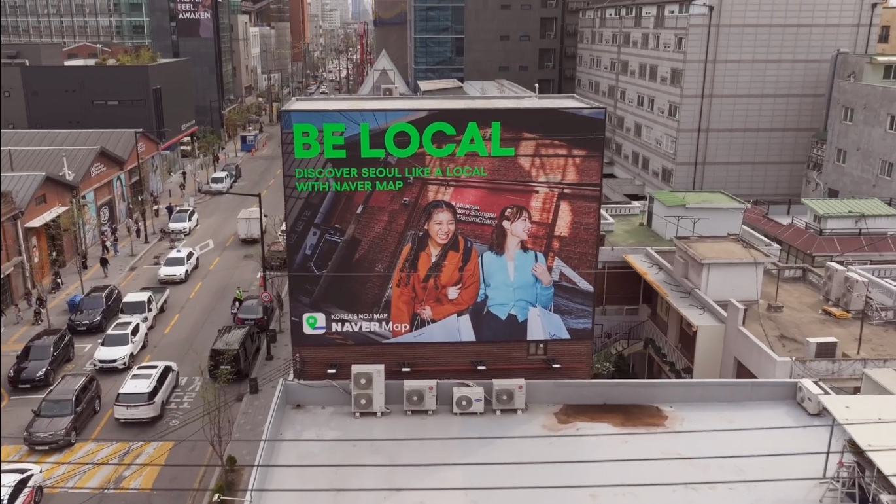
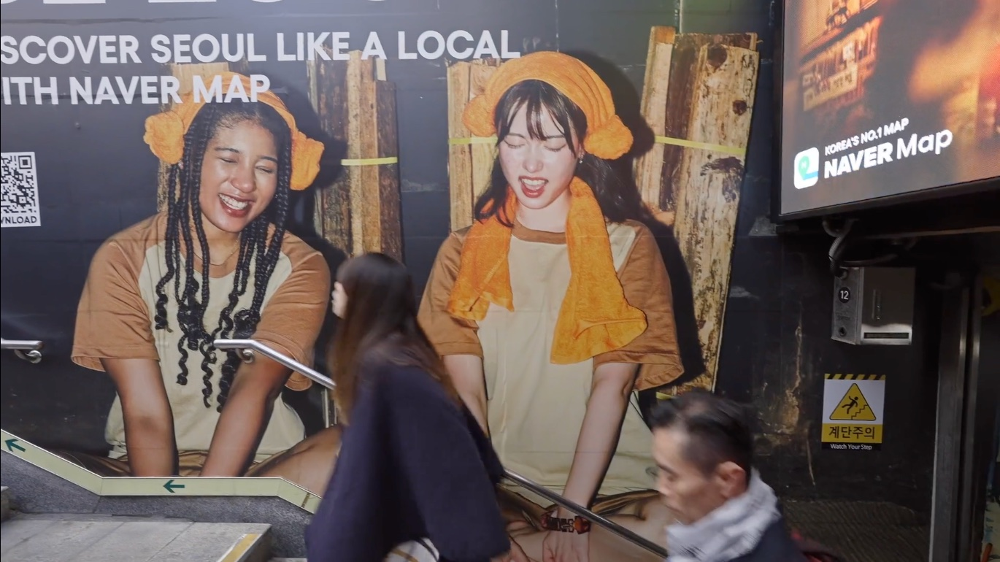
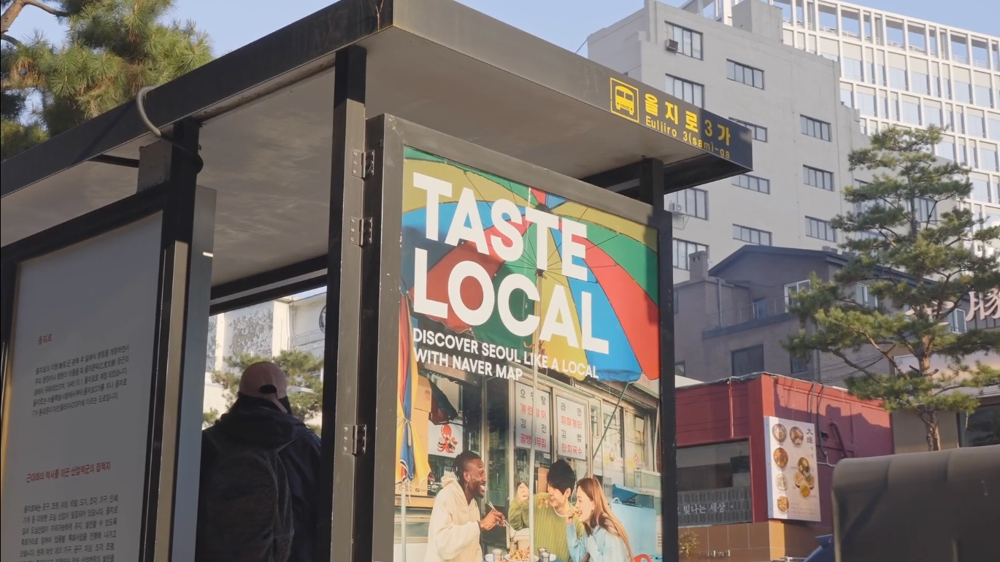
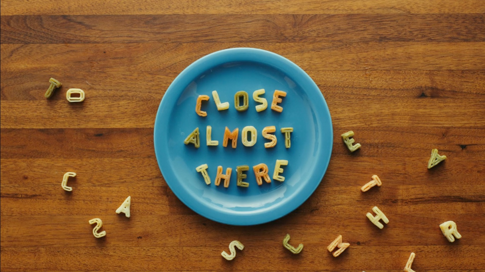
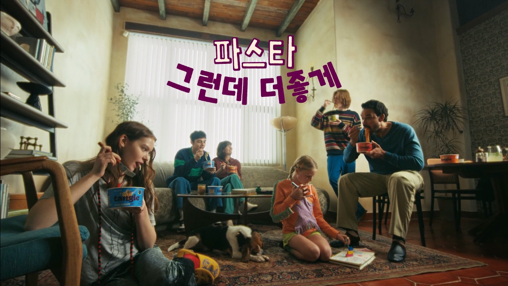
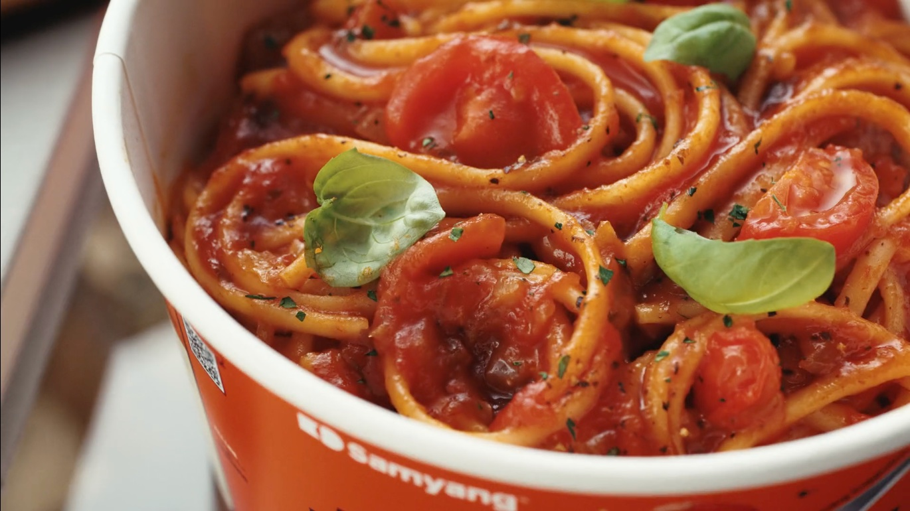

(5) · Two Rabbits · Campaign / Production
브랜드 캠페인 기획·제작
왜 카피라이터의 일은 카피에서 끝나야 할까?
광고대행사 투래빗츠에서 카피라이터로 일하며 다이슨, 네이버 지도, 삼양의 국내외 브랜드 캠페인을 기획하고 제작했습니다.
제품의 강점을 고객의 언어로 바꾸는 카피라이팅부터 캠페인 콘셉트 개발, 비주얼 기획, 촬영 및 제작 운영까지 참여했습니다. 모든 작업에서 중요하게 생각한 것은 브랜드가 전하고 싶은 가치와 고객이 실제로 경험하는 장면을 연결하는 일이었습니다.
01 · Dyson기술의 언어를 자기표현의 언어로
Situation기능을 넘어 사용자의 경험을 이야기하다
다이슨 에어랩 코안다 2x는 다양한 어태치먼트로 여러 헤어스타일을 연출할 수 있는 제품입니다. 국내 론칭 캠페인에서는 이러한 기술적 강점을 한국 소비자에게 더욱 직관적이고 감성적인 언어로 전달할 필요가 있었습니다.
Solution단 하나로 모든 나를 표현하다
기능과 성능을 강조하는 기존의 테크 중심 표현에서 벗어나, 다양한 스타일을 연출하는 경험을 자신의 여러 모습을 표현하는 즐거움으로 해석했습니다.
이를 바탕으로 개발한 〈단 하나로 모든 나를 표현하다〉가 국내 론칭 캠페인의 메인 카피로 채택되었습니다.



Result국내 캠페인 전반으로 확장된 메시지
해당 카피는 브랜드 필름을 비롯한 국내 론칭 캠페인 전반에 활용되었습니다. 카피 개발 이후에도 영상과 비주얼을 검수하고 매체별 최종 소재를 출고하며 메시지의 일관성을 관리했습니다.
제품의 기능을 나열하기보다 고객이 그 기능을 통해 무엇을 경험할 수 있는지 이야기한 현지화 작업이었습니다.
02 · Naver Map지도 서비스를 여행자의 행동으로 번역하다
Situation외국인 여행자에게 네이버 지도를 선택할 이유를 만들다
방한 외국인 여행자에게 네이버 지도를 알리기 위해서는 서비스의 기능을 설명하는 것만으로는 부족했습니다. 낯선 도시에서 여행자가 무엇을 하고 싶어 하는지, 어떤 순간에 지도를 필요로 하는지에 주목했습니다.
Solution여행자의 일상을 네 가지 LOCAL로 정의하다
서울을 현지인처럼 경험하고 싶어 하는 여행자의 관심사를 네 가지 행동으로 범주화했습니다.
TASTE LOCAL · SNAP LOCAL · SHOP LOCAL · PLAY LOCAL
맛집을 찾고, 사진을 찍고, 쇼핑하고, 즐길 거리를 탐색하는 여행의 순간들을 직관적인 카피로 표현했습니다. 서비스의 기능보다 여행자가 누리고 싶은 경험을 먼저 제시하는 방식이었습니다.
카피 개발과 함께 키비주얼 촬영을 준비하고 현장 촬영을 보조하며 메시지가 실제 이미지로 구현되는 과정에도 참여했습니다.
Result서울에서 부산으로 이어진 캠페인
완성된 캠페인은 공항과 지하철, 버스 정류장, 건물 외벽 등 여행자의 주요 동선에서 전개되었습니다. 서울 캠페인의 성공적인 전개 이후 부산으로도 확장되며 도시별 로컬 경험을 소개하는 캠페인으로 이어졌습니다.



BE LOCAL 캠페인은 2026 소비자가 뽑은 좋은 광고상 문화체육관광부 장관상을 수상했습니다.
고객의 행동을 중심으로 메시지를 설계하고, 하나의 캠페인 구조를 서로 다른 도시의 콘텐츠로 확장한 경험이었습니다.
03 · Samyang제품마다 다르게 말하되, 브랜드답게
삼양 프로젝트에서는 글로벌 소비자를 대상으로 제품의 차별점을 전달하는 캠페인과 브랜드의 표현 원칙을 정리하는 가이드 제작에 참여했습니다.
제품별로 적합한 언어와 비주얼을 개발하면서도 브랜드 고유의 정체성을 유지하는 것이 핵심 과제였습니다.
① Tangle익숙한 파스타에 새로운 선택의 이유를 더하다
Situation간편식을 넘어 파스타로서의 매력을 전달하다
탱글은 간편하게 즐길 수 있는 파스타라는 제품의 특징을 글로벌 소비자에게 전달해야 했습니다. 그러나 조리의 편리함만 강조해서는 다른 간편식과 차별화하기 어려웠습니다.
SolutionStill Pasta. Just Better.
익숙한 파스타의 만족감은 유지하면서 먹는 방식과 경험은 더 좋아졌다는 관점에서 캠페인 콘셉트를 기획했습니다. 직접 개발한 메인 카피 〈Still Pasta. Just Better.〉는 제품의 정체성과 차별점을 짧은 두 문장으로 전달합니다.
이를 중심으로 일상적인 식사 장면에 제품을 자연스럽게 녹여내는 브랜드 필름을 기획했습니다. 영상 속 손글씨 카피는 제품의 특징을 설명하는 동시에 장면의 분위기를 형성하는 시각적 장치로 활용되었습니다.



Result뉴욕 타임스스퀘어부터 글로벌 시장까지
캠페인은 뉴욕 타임스스퀘어 옥외광고(OOH)까지 추가 집행되며 유럽과 영미권, 동남아시아 등 다양한 시장으로 확장되었습니다.
익숙한 제품에 새로운 선택의 이유를 더한 하나의 메시지가 글로벌 소비자와 만나는 다양한 접점으로 확장된 사례였습니다.
② Buldak Swicy현지 콘텐츠의 문법으로 매운맛과 단맛을 표현하다
Situation제품의 특징을 짧고 직관적으로 전달하다
태국을 비롯한 글로벌 시장에 매운맛과 단맛이 결합된 불닭 스와이시를 소개해야 했습니다. 빠르게 소비되는 숏폼 환경에서는 제품의 특징을 설명하기보다 소비자가 즐겨 보는 콘텐츠의 형식으로 전달하는 것이 중요했습니다.
SolutionSpicy Meets Sweet
〈Spicy Meets Sweet〉라는 캠페인 테마를 바탕으로 6편의 숏폼 브랜드 필름에 등장하는 캐릭터 페르소나와 비주얼을 개발했습니다.
서로 다른 개성을 가진 캐릭터와 반전 있는 상황을 통해 매운맛과 단맛의 조합을 직관적으로 표현했습니다. 캠페인은 현지 틱톡커와 릴스 크리에이터의 콘텐츠 문법을 활용한 인플루언서 협업으로도 확장되었습니다.
Result브랜드 필름 2편, 각각 약 1,200만 조회수
브랜드 필름 중 〈Tattoo Man〉은 약 1,232만 회, 〈Biker Girl〉은 약 1,201만 회의 조회수를 기록했습니다. 특히 〈Biker Girl〉은 태국·말레이시아·필리핀 모두에서 브랜드 필름 중 가장 높은 영상 조회율(VTR)을 달성했습니다.
캠페인 전체로는 누적 조회수 약 2억 1,707만 회, 오가닉 조회 비중 65%를 기록했습니다.
제품의 특징을 현지 소비자에게 익숙한 콘텐츠로 풀어내며 브랜드 메시지의 도달과 자발적인 확산을 함께 이끌어낸 사례였습니다.
③ Samyang Global Brand Guide다양한 시장에서도 일관된 브랜드의 언어를 만들다
Situation글로벌 시장에서 브랜드의 정체성을 유지하다
글로벌 브랜드는 국가와 매체에 따라 다양한 방식으로 표현되기 때문에 브랜드의 정체성을 유지할 수 있는 공통 기준이 필요합니다.
Solution브랜드의 시각적·언어적 표현 기준을 정립하다
약 80~100페이지 분량의 글로벌 브랜드 가이드를 제작하며 키비주얼과 카피의 표현 규칙을 정리했습니다.
각기 다른 제작 환경에서도 브랜드 고유의 정체성을 일관되게 구현할 수 있도록 시각적·언어적 기준을 구체화했습니다.
Result일관성과 유연성을 함께 고려한 가이드
다양한 시장과 매체에서 활용할 수 있는 브랜드 표현 기준을 제시했습니다.
개별 캠페인의 창의성을 살리면서도 브랜드다운 표현을 일관되게 유지하기 위한 작업이었습니다.
Closing브랜드의 말과 고객의 말 사이에서
다이슨에서는 기술적 강점을 자기표현의 언어로 바꾸고, 네이버 지도에서는 서비스의 기능을 여행자의 행동과 연결했습니다. 삼양에서는 제품별로 다른 콘셉트와 표현 방식을 개발하면서 브랜드의 일관성을 고민했습니다.
세 프로젝트를 통해 배운 것은 좋은 브랜드 메시지는 제품을 설명하는 데 그치지 않고, 고객이 그 제품을 선택할 이유를 만들어야 한다는 것입니다.
카피 개발부터 비주얼 기획과 제작 운영까지 경험하며, 브랜드의 가치가 고객의 일상에 닿는 콘텐츠로 완성되는 과정을 익혔습니다. 앞으로도 브랜드의 고유한 목소리를 지키면서 고객이 공감할 수 있는 이야기를 만들고 싶습니다.